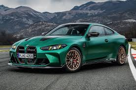
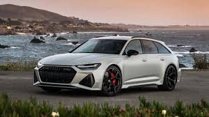
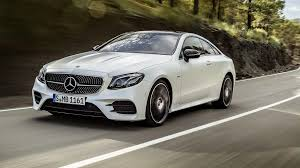

| Характеристика | BMW M4 | Audi RS6 Avant | Mercedes-AMG E 63 |
|---|---|---|---|
| Самая дорогая модель | M4 Competition xDrive | RS6 Performance | E 63 S 4MATIC+ |
| Самая доступная модель | M4 Coupe | RS6 Avant Base | E 63 Base |
| Двигатель | 3.0 л R6 Twin Turbo | 4.0 л V8 Twin Turbo | 4.0 л V8 Biturbo |
| Расход топлива | 10.2 л/100 км | 12.0 л/100 км | 11.8 л/100 км |
| Разгон (0–100 км/ч) | 3.5 сек | 3.4 сек | 3.4 сек |
| Экологические сертификаты | EURO 6d | EURO 6 | EURO 6 |
| Гарантийный срок | 3 года | 3 года | 3 года |
| Максимальная скорость | 290 км/ч | 305 км/ч | 300 км/ч |
| Тип трансмиссии | Автоматическая | Автоматическая | Автоматическая |
| Количество передач | 8 | 8 | 9 |
| * Данные актуальны на 2025 год | |||
Купе класса high-performance. Легендарный рядный 6-цилиндровый двигатель, полный привод xDrive и агрессивный стиль. М4 — чистая динамика.
Семейный спорткар с душой суперкара. Универсал с V8 Twin Turbo, культовый Quattro и салон бизнес-класса.
Брутальный представитель бизнес-класса с мощью суперкара. Уникальный баланс комфорта и звериной динамики.
